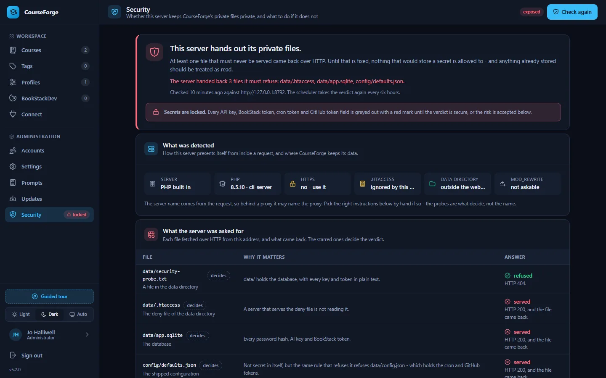
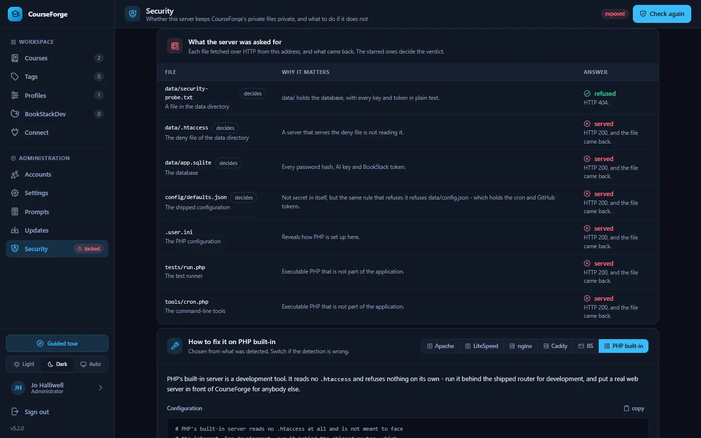

Administer
Security
The self-check that locks secrets until the server is safe, configuration for nginx, Caddy and IIS, keeping data out of the web root, and the hardening applied everywhere.
CourseForge keeps everything in data/: the SQLite database with every password hash and, in plain text, every AI key and BookStack token the installation has been given. They are never sent back to a browser and never written to the audit log, but at rest they are readable by anyone who can read the file. So the one thing that must never be true is that data/app.sqlite can be fetched over HTTP.
CourseForge protects itself with .htaccess files - and a file the server may not read is not a promise. So it checks.
Administration › Security#


The installation writes a small probe file into the data directory and fetches it - along with the database, the deny file, the shipped configuration, the invite file while there is one, and a few files that should not be served - from its own public address, reading a few kilobytes of each. The verdict:
| Verdict | Means |
|---|---|
| secure | every file that holds a secret was refused. Keys and tokens may be stored. |
| exposed | at least one came back. Nothing that would store a secret is allowed to, and anything already stored should be treated as read. |
| unverified | the server could not reach itself: no public address is known (set app.public_url), or the host blocks requests to its own name. |
| unknown | nobody has checked yet. The check runs the first time the screen opens, then every six hours from the scheduler. |


Until the verdict is secure, every field that would store a secret is locked: API keys and BookStack tokens on profiles, the cron and GitHub tokens in Settings. They are greyed out with a red mark, an administrator sees a banner on every screen, and the API refuses the write whichever door it comes through, MCP included. Nothing already stored stops working.
The screen names the server it detected - Apache, LiteSpeed, nginx, Caddy, IIS or PHP's own - with the configuration block to paste for it (switchable by hand, because a proxy can make the detection wrong), lists every file it asked for and what came back, and repeats the one arrangement that is safe on any server: the data directory outside the web root.
Accepting the risk#
At the bottom, framed in red, an administrator who has verified the server by hand - behind a proxy that will not let it fetch itself, say - can accept the risk by typing back a six-character code shown on the screen. The fields unlock, and the acceptance is written to the audit log with their name. It can be withdrawn, and the lock holds again.
The safest arrangement: data outside the web root#
Point CourseForge at a data directory the web server does not serve, and the question of what refuses data/ stops arising:
SetEnv COURSEFORGE_DATA_DIR /var/lib/courseforgefastcgi_param COURSEFORGE_DATA_DIR /var/lib/courseforge;Then only index.html, assets/, api/, cron.php and bs.php need to be public. config/ must remain readable by PHP but not by the web.
Serving it somewhere other than Apache#
nginx, Caddy, IIS and PHP's built-in server ignore .htaccess entirely. On those you reproduce the protection yourself. The shipped rules do five things:
- route
/api/…toapi/index.php, and/mcptoapi/mcp.php; - leave
api/mcp.phpalone - it is a second front door with its own authentication; - deny all access to
data/,config/,src/,tools/andtests/; - deny
*.sqlite(and its-wal,-shm,-journalfiles),*.db,*.json,*.md,*.log,*.ini,*.txt,*.zip,*.tar,*.gz,*.bak,*.sqland*.sheverywhere; - re-expose the
Authorizationheader, which Apache drops under CGI/FastCGI - without it every MCP request looks unauthenticated.
.php is deliberately not on the deny list, because the application is made of PHP files. Routing itself is optional - the app calls api/index.php?r=<route> and works with no rewrite rules at all - but the directory and file-type protection is not.
nginx#
# Block the private directories outright
location ^~ /data/ { deny all; return 403; }
location ^~ /config/ { deny all; return 403; }
location ^~ /src/ { deny all; return 403; }
location ^~ /tools/ { deny all; return 403; }
location ^~ /tests/ { deny all; return 403; }
# Block sensitive file types anywhere. .txt is here for INVITE-CODE.txt.
location ~* \.(sqlite|sqlite3|sqlite-wal|sqlite-shm|sqlite-journal|db|db-wal|db-shm|json|md|log|ini|txt|zip|tar|gz|bak|sql|sh)$ {
deny all; return 403;
}
# API front controller. The regex location below matches .php first, so
# api/mcp.php is handed to PHP rather than routed into index.php.
location /api/ {
try_files $uri /api/index.php$is_args$args;
}
location = /mcp { rewrite ^ /api/mcp.php last; }
location ~ \.php$ {
include fastcgi_params;
fastcgi_pass unix:/run/php/php-fpm.sock;
fastcgi_param SCRIPT_FILENAME $document_root$fastcgi_script_name;
fastcgi_read_timeout 1800; # a page generation may take minutes
}Caddy#
courseforge.example.com {
root * /var/www/courseforge
@privateDirs path /data/* /config/* /src/* /tools/* /tests/*
respond @privateDirs 403
@privateFiles path *.sqlite *.sqlite3 *.sqlite-wal *.sqlite-shm *.sqlite-journal *.db *.db-wal *.db-shm *.json *.md *.log *.ini *.txt *.zip *.tar *.gz *.bak *.sql *.sh
respond @privateFiles 403
rewrite /mcp /api/mcp.php
php_fastcgi unix//run/php/php-fpm.sock
file_server
}IIS#
Use <requestFiltering><hiddenSegments> for the five directories and <fileExtensions> for the suffixes, in web.config. IIS does not read .htaccess and does not fall back to it, so nothing is protected until that file exists.
PHP's built-in server#
tools/router-dev.php reproduces the directory rules and the database suffixes for development, but not the .json, .txt or .md deny - under php -S, config/defaults.json and INVITE-CODE.txt can be downloaded. Fine on a laptop; not a way to serve anybody else.
The data directory guards itself#
The release ships data/.htaccess, which denies everything in that directory. Because there are ordinary ways to end up without it - PHP creating a missing directory empty, an update never writing into data/, a deploy tool that skips data/ - CourseForge writes the file itself, from a constant in the code, on the way to opening the database. A file already there is left alone, including one you edited. A missing data/.htaccess is therefore reported as a failure by the installation check: it can only mean PHP was refused permission to write it.
Hardening applied regardless of the server#
- Sessions: the cookie is
HttpOnly,SameSite=Lax, scoped to the install directory, andSecurewhenever HTTPS is detected (including behind a proxy that setsX-Forwarded-Proto). Strict mode, so a made-up session id is never adopted; the id is renewed on sign-in and on a password change. - Requests: every non-GET request needs a CSRF token; bodies above 16 MB are refused before they are read.
- Headers: every response sends
X-Content-Type-Options: nosniffandCache-Control: no-store; on Apache alsoX-Frame-Options: SAMEORIGIN,Referrer-Policy: same-originand aContent-Security-Policyofframe-ancestors 'self'; base-uri 'none'; object-src 'none'; form-action 'self'. Ascript-srcis deliberately not sent: the import map is inline and changes every release, and Vue's runtime template compiler needs'unsafe-eval'. - Outbound addresses a profile carries are vetted before they are stored:
httporhttpsonly, a host, no credentials in the address, never the cloud metadata range (a local model server on the same machine is allowed). What an address answers is never quoted back verbatim. The HTTP client speaks HTTP and HTTPS only and follows redirects only to HTTPS, only for BookStack. - Secrets on profiles are kept only for the address they were stored against.
- Host headers:
Hostis used for the addresses CourseForge hands out only when it looks like a host, andX-Forwarded-Hostnever; behind a rewriting proxy setapp.public_urlandmcp.public_url. - Throttling: sign-ins and password changes are throttled per account and per address, in the browser and over MCP.
- Rendering: previews are sanitised with DOMPurify with
<style>, forms and inlinestyleattributes forbidden, because the author of the text is a language model and the preview lives in the application's own origin. MathJax runs without the packages that could fetch extensions or createjavascript:links. - MCP: a bearer token, an
Origincheck againstmcp.allowed_origins, scopes that only narrow, and connection tokens minted over MCP that die with the connection that minted them.
Always serve CourseForge over HTTPS - API tokens and session cookies travel with every request.
Backups#
data/ is the installation: app.sqlite and config.json. Back it up like the secret it is - a copy of the database holds every API key in plain text. The update backups under data/backups/ are single zip archives on purpose: a backup tree would be a runnable second copy of the application under data/.